---
{
"layout": "note",
"title": "Ch2 Conservation Laws_ part3",
"journal": true,
"section": "Study",
"topic": "Viscous Flow",
"excerpt": "지난 두 포스터에서 Conservation of Mass Conservaction of Momentum 두가지를 다루었고, 이번에는 마지막으로 Conservation of Energry 를 다루어 보도록 하겠습니다. 시작부터, 조금 ",
"classes": "wide",
"permalink": "/blog/mechanical-engineering/viscous-flow/ch2-conservation-laws-part3/",
"study_area": "Mechanical",
"date": "2024-09-30",
"source_url": "https://jeffdissel.tistory.com/108",
"header": {
"teaser": "/blog/mechanical-engineering/viscous-flow/ch2-conservation-laws-part3/images/img-001.png"
}
}
---
{% raw %}지난 두 포스터에서
Conservation of Mass
Conservaction of Momentum
두가지를 다루었고,
이번에는 마지막으로
Conservation of Energry 를 다루어 보도록 하겠습니다.
시작부터, 조금 복잡한 식이지만,
사실 의미를 따지고 보면 그렇게 복잡하지는 않습니다^^
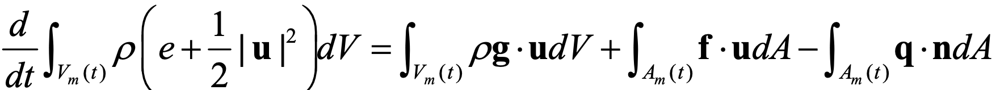
[좌항]
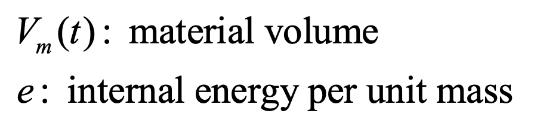
control volume과 질량대비 내부에너지(e)
+ 운동에너지 term(1/2 u^2)
그리고 우항들은 전부, 어떠한 에너지인지를 설명해주는 항들입니다.
(중력,표면력, 열)
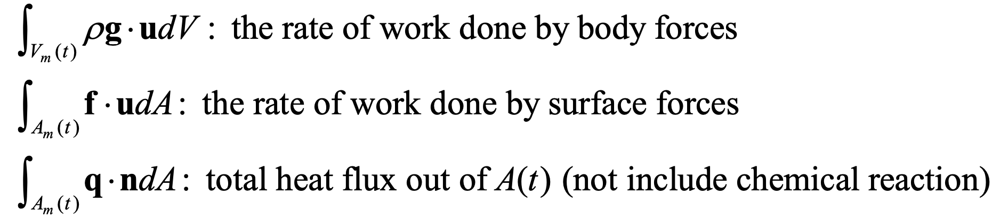
여기서 계산을 편리하게 하기 위해서,
모두 cartesian tensor
형태로 바꾸어 줍니다.
+ Guassian Theorem으로 체적분으로 변경.
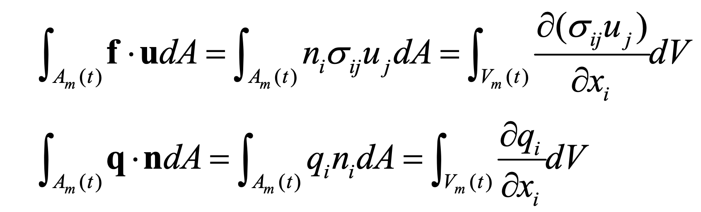
우항의 체적분을 전부 합쳐주고,
좌항은 Reynolds Transport Theorem 을 활용 + 가우스 정리를 이용하면,
다음과 같이 표현된다.
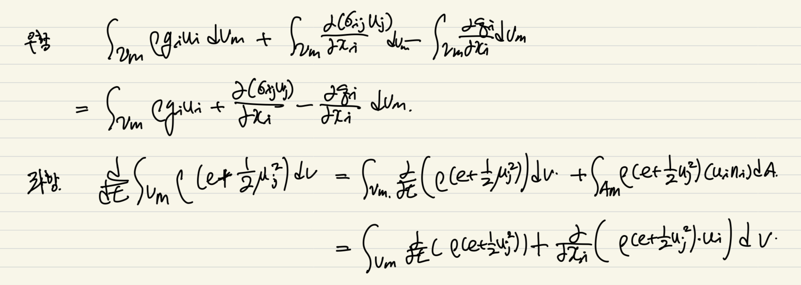
이제 좌항 = 우항식을 전체적으로 세워주면, 다음식이 도출 된다.
이후에, 좌항의 두 미분 term을 쪼개주면
귀신같이 continuity term이 나오게 된다.
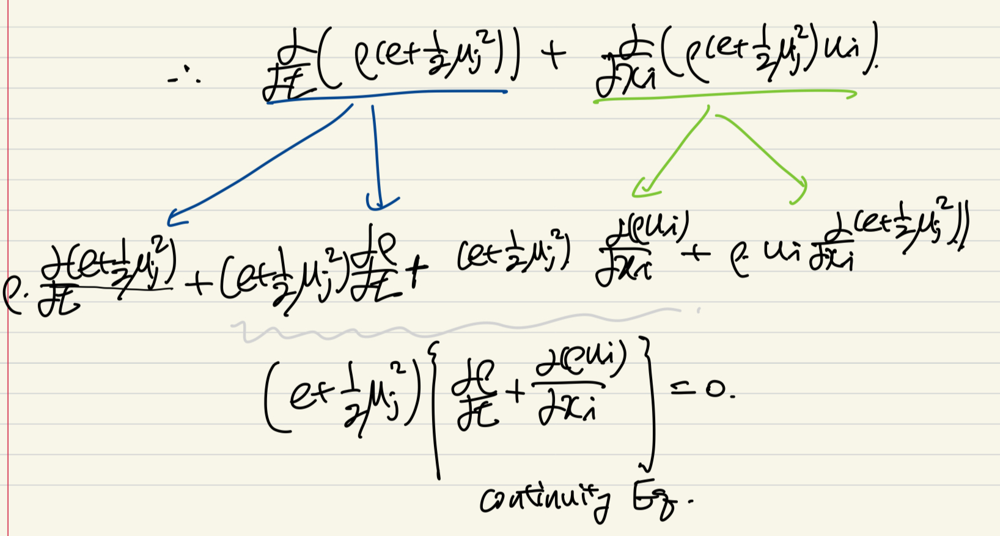
최종적으로,
Total Energy Equation
이 derived.
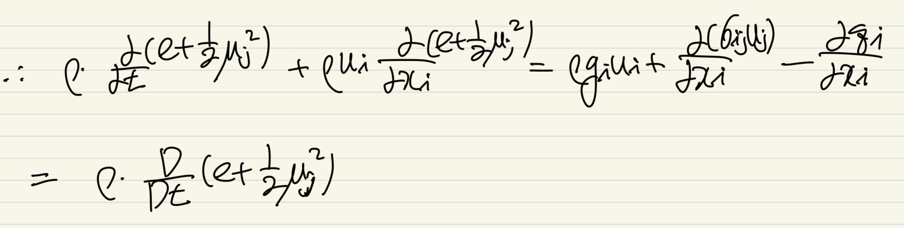
최종 energy term을
mechanical E, thermal E 로 쪼개서 나타내 보자.
먼저 Mechanical E eq은
Momentum 보존식에서 다음과 같이 유도할 수 있다.
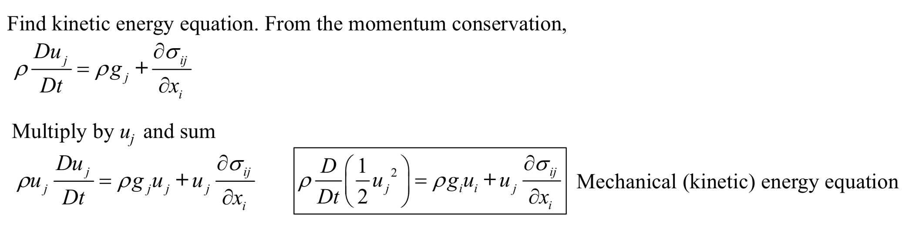
Total E - Mechanical E = thermal E
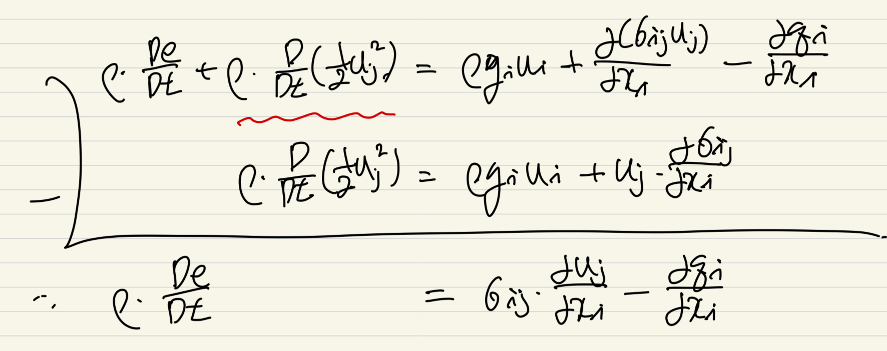
최종적으로, Thermal E eq은
다음과 같이 표현된다.
(여기서 압력 + shear stress로 분리)
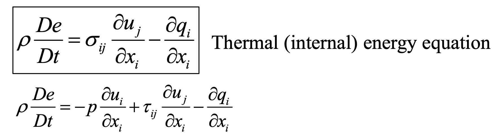
여기서, velocity gradient tensor를
우리가 배웠던 shear rate tensor, rotation tensor로 쪼개주고
shear stress tensor와 밑에 처럼 곱해주면,
symmetric 행렬과 anti-symmetric 행렬의 특징으로
0이 되어버린다.
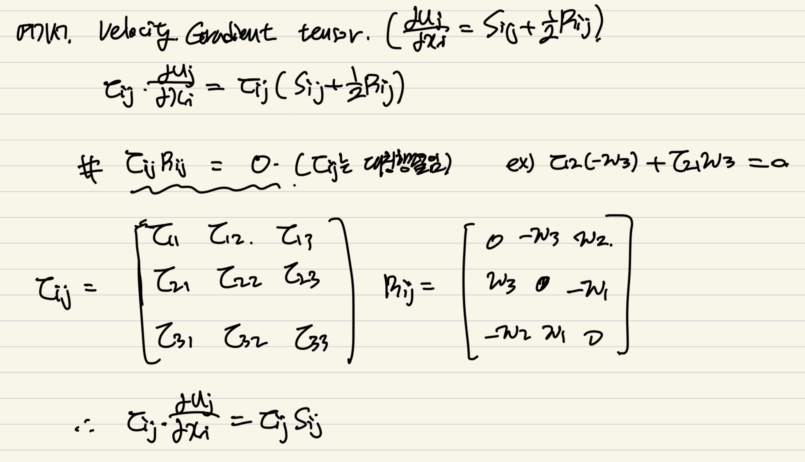
결국 위처럼, Sij만 남게 된다는 것.
남은 부분을 Dissipation Function이라고 부르고,
단위부피당, 내부에너지 -> 열에너지로 변환되는 정도를 나타낸다.
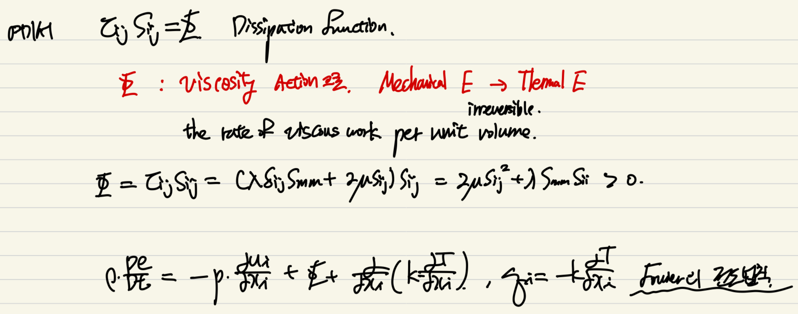
최종적으로 Dissipation rate, Fourier conduction law까지 적용시키면
다음의 에너지 방정식이 유도된다.{% endraw %}